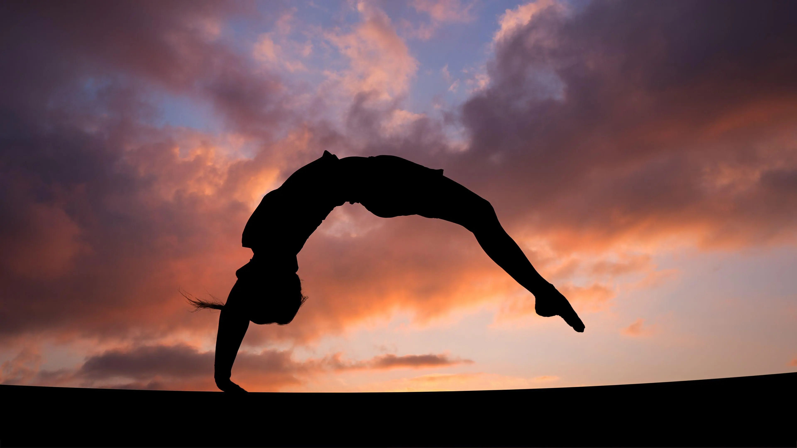
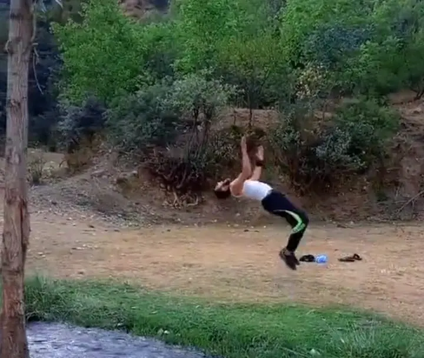

The Kinetic Chapter:
Strength & Fluidity
Gymnastics has always been more than just physical exercise for me; it is a discipline of the mind and a test of true body awareness. It’s about pushing the boundaries of what the human body can achieve—finding that perfect balance between explosive power and controlled grace.
Every session in the gym is a journey in mastering gravity, where the focus isn't just on the strength of the muscles, but on the precision of the spirit. It requires a level of focus that demands you to be entirely present in the moment.

Defying Gravity
Beyond the physical training, this journey is about resilience. Every fall is a lesson in rising again, and every successful maneuver is a testament to hours of silent practice and dedication. It’s a space where I clear my mind and test my limits.